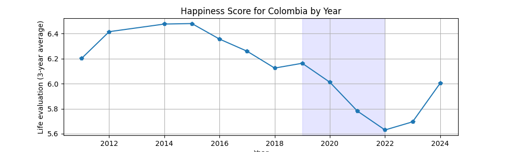
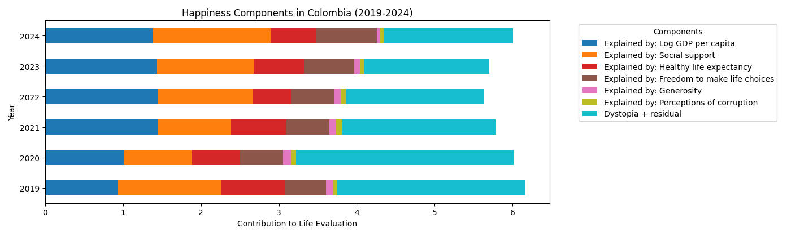
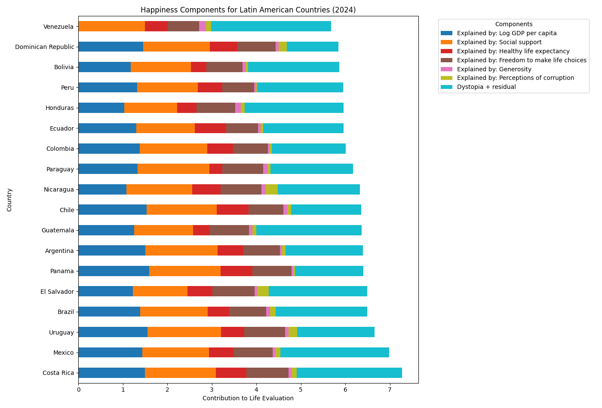
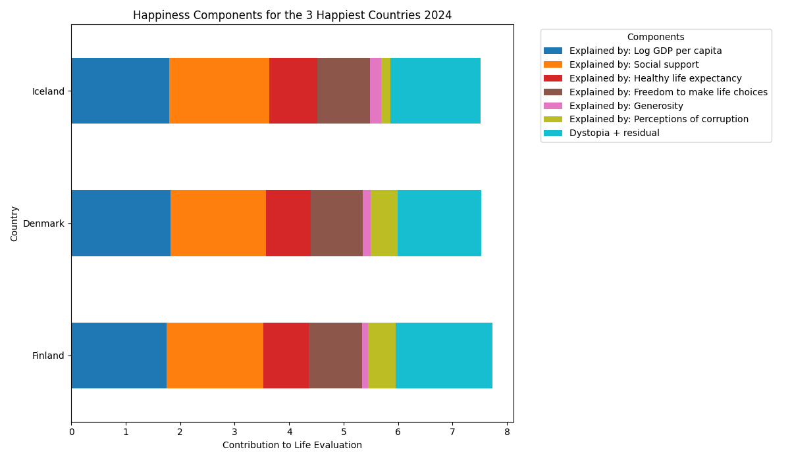

Esta gráfica muestra cómo ha cambiado la satisfacción con la vida en Colombia. Entre 2011 y 2015 el país alcanzó niveles relativamente altos de bienestar, lo que indica estabilidad económica y social. Sin embargo, desde 2016 comienza un descenso continuo que se profundiza entre 2020 y 2022. Esto sugiere deterioro en factores como seguridad económica, confianza institucional y estabilidad social. La leve recuperación posterior indica resiliencia, pero no retorno a los niveles máximos.

El puntaje total se compone de varios factores medibles:
PIB per cápita: Nivel promedio de riqueza económica.
Apoyo social: Existencia de familiares o amigos que brindan ayuda.
Esperanza de vida saludable: Calidad y duración de la vida.
Libertad para tomar decisiones: Percepción de autonomía personal.
Generosidad: Conductas solidarias.
Percepción de corrupción: Confianza en instituciones.
Dystopia + residual: Factores culturales o no medidos directamente.
Se observa que el apoyo social es el pilar principal en Colombia,
mientras que la percepción de corrupción y la libertad presentan debilidades importantes.

Colombia se ubica en una posición media dentro de la región. Países como Costa Rica y Uruguay presentan mejores resultados, principalmente por mayor estabilidad institucional y económica. Por otro lado, Venezuela y Bolivia muestran niveles más bajos. Esto indica que el bienestar regional depende más de la estabilidad social que únicamente del ingreso económico.

Finlandia, Dinamarca e Islandia lideran el ranking mundial. Estos países combinan alto nivel económico, baja corrupción, excelente sistema de salud y gran confianza social. La diferencia con Colombia no es cultural sino estructural: instituciones sólidas y seguridad económica sostenida.